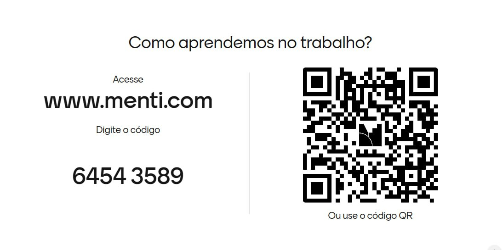

Um post sem autoria, um PDF antigo e três textos que repetem a mesma opinião.
Resultado provável:Síntese fluida, pouco diversa e difícil de sustentar.
Mentimeter e Gemini Notebook: da escuta do grupo à produção responsável com fontes.
Material de estudo e retomadaPedagogo, mestre em Educação e Comunicação pela UnB e doutorando em Educação. Atua na administração pública como professor e formador.
Sua trajetória conecta educação, comunicação, tecnologias, inovação e desenvolvimento de competências complexas.

Facilitador e instrutor em programas formativos para o Poder Judiciário. Mestrando em Gestão Pública pela UnB e especialista em Inovação em Tecnologias Educacionais.
Atua com educação corporativa, desenho instrucional, liderança, negociação e inovação, sempre buscando transformar conceitos em decisões aplicáveis.

Use este material como uma conversa que continua depois do curso.
Leia as perguntas, tente responder antes de avançar, confronte os exemplos com sua prática e registre o que você mudaria em uma formação real.
Dê tempo para formular uma resposta própria.
Observe onde sua hipótese se aproxima ou se afasta do exemplo.
Traduza a ideia para um problema real do trabalho.
Volte à decisão inicial e melhore-a.
Perguntamos que ação de aprendizagem foi ampliada.
Não confundimos fluidez técnica com aprendizagem.Investigamos o que a falha revela sobre o desenho.
Não transformamos erro técnico em constrangimento.Voltamos às fontes e assumimos a revisão.
Não terceirizamos julgamento nem autoria.
Quando perguntamos “Como aprendemos no trabalho?”, o que estamos tentando descobrir?
Não buscamos uma resposta correta. Buscamos repertórios, experiências, ausências, padrões e diferenças que ajudem o formador a decidir como mediar o percurso.
Uma resposta diagnóstica é uma pista sobre o ponto de partida. Ela ainda não é prova de aprendizagem.
Reduza a explicação e proponha um caso mais exigente.
A decisão é aprofundar.Peça justificativas e promova confronto de hipóteses.
A decisão é problematizar.Investigue acesso, clareza, segurança e tempo.
A decisão é remover barreiras.Reformule e teste outra evidência.
A decisão é revisar o instrumento.
Ou a tecnologia mudou quem respondeu, quando respondeu, o que ficou visível e como o formador pôde agir?
Uma tecnologia educacional não é apenas um suporte. Ela reorganiza acesso, participação, representação, registro, feedback e memória da experiência.
O valor não estava na nuvem, no gráfico ou no QR. Estava na possibilidade de tornar o pensamento do grupo visível e utilizá-lo na mediação.
Coleta e visualiza respostas.
É o ambiente técnico.Define por que perguntar, em que momento e para qual decisão.
É a intenção.Interpreta, problematiza, devolve e conecta as respostas ao conteúdo.
É a ação do formador.Mostra o que a resposta permite ou não concluir.
É o fundamento da decisão.Durante um curso, 70% escolhem uma alternativa incorreta. O que o formador deve fazer primeiro? A) Repetir a explicação. B) Pedir justificativas e comparar critérios. C) Mostrar a resposta correta. D) Ignorar e avançar.
Por que a alternativa B produz melhor evidência?
Porque permite observar o raciocínio que sustentou a escolha. O percentual mostra onde olhar; a justificativa ajuda a compreender o que precisa ser revisto.
Em uma palavra, que condição mais favorece a aprendizagem no trabalho?
O que fazemos depois que a nuvem aparece?
Pedimos exemplos, agrupamos sentidos próximos, observamos ausências e confrontamos termos que parecem iguais. Sem debriefing, a nuvem é apenas uma imagem atraente.
Que decisão você tomaria neste caso e qual critério sustentaria sua escolha?
O que a resposta aberta exige do formador?
Tempo para leitura, segurança para participação, critérios de análise e cuidado antes de projetar conteúdo sensível ou identificável.
“Quanto você se sente capaz de executar esta tarefa?”
Mede percepção de confiança, não desempenho.“Ordene os critérios mais relevantes para esta decisão.”
Torna prioridades visíveis, mas pede justificativa.“Distribua os pontos entre custo, risco, tempo e impacto.”
Explicita trade-offs e favorece comparação.Pode indicar adesão e acesso.
Ainda não informa qualidade do raciocínio.Pode indicar percepção positiva.
Ainda não demonstra capacidade de executar.Pode indicar revisão de hipótese.
Pergunte o que mudou e por quê.Pode indicar consenso.
Investigue silêncio, pressão social e alternativas ausentes.Confirme link, QR, código, rede, projeção e um voto de teste.
Informe finalidade, tempo, anonimato e visibilidade das respostas.
Leia resultados relevantes e ofereça alternativa sem celular.
Evite dados pessoais e revise respostas abertas antes de projetar.
Cartões, mãos levantadas ou conversa em pares devem preservar a mesma pergunta e a mesma decisão pedagógica.
E quando precisamos escutar também documentos, vídeos, normas, artigos e materiais de curso?
Entramos no Gemini Notebook.
O que muda quando o formador delimita o corpus?
A resposta fica ancorada em um conjunto de fontes selecionado. Isso aumenta a rastreabilidade e reduz a dispersão, mas não garante que o corpus seja correto, atual, suficiente ou livre de vieses.
O Gemini Notebook ajuda a interrogar, relacionar e transformar fontes. Ele não é uma fonte autônoma de verdade.
Trechos, conceitos, convergências e contradições.
Você confere contexto e pertinência.Ideias complexas em diferentes níveis de detalhe.
Você avalia precisão e linguagem.Sínteses, mapas, quizzes, áudios e outros artefatos.
Você revisa, corrige e assume autoria.O que é verdadeiro, ético ou adequado ao contexto.
O julgamento continua humano.A qualidade começa no corpus, ganha direção no prompt e só termina depois da revisão do artefato.
Se o notebook recebeu materiais desatualizados, repetitivos ou pouco confiáveis, o que podemos esperar?
Respostas coerentes com um corpus inadequado. A IA pode organizar bem um problema mal alimentado.
Corpus antes do prompt: delimite problema, público, período, autoridade e diversidade antes de carregar arquivos.
PDFs, textos, apresentações, relatórios e materiais de curso.
Páginas públicas relevantes e estáveis.
Conteúdo disponível e compatível com o recurso da conta.
Contexto, perguntas e registros sem dados indevidos.
A pergunta decisiva não é apenas “a ferramenta aceita?”.
Pergunte também: tenho autorização para usar? O material é necessário? Está atualizado? Há dados pessoais, processuais, sigilosos ou protegidos?
Quem produziu e com que responsabilidade?
Prefira fontes primárias e institucionais quando o tema exigir.A data e a versão ainda são válidas?
Tecnologias, normas e políticas mudam.A fonte responde ao problema e ao público?
Texto bom também pode ser irrelevante.O corpus inclui contrapontos e limites?
Evite apenas confirmar a hipótese inicial.O uso respeita direitos, sigilo e finalidade?
Possibilidade de upload não equivale a permissão.Um post sem autoria, um PDF antigo e três textos que repetem a mesma opinião.
Resultado provável:Síntese fluida, pouco diversa e difícil de sustentar.
Documento oficial atual, estudo especializado, caso real anonimizado e contraponto fundamentado.
Resultado provável:Análise mais rastreável, comparável e útil para decidir.
Qual fonte está faltando no seu corpus?
Às vezes, a ausência mais importante é justamente a fonte que poderia contrariar nossa hipótese.
Título, autoria, data, versão e origem estão claros?
A fonte oferece conceito, regra, evidência, caso, contraponto ou exemplo?
Que lacuna, viés ou contexto precisa ser lembrado?
Há dado pessoal, sensível, sigiloso ou uso não autorizado?
Uma lista enxuta de fontes, cada uma com função e limite registrados.
Antes do upload, responda quatro perguntas.
Em exercícios, prefira fontes públicas, autorizadas, fictícias ou adequadamente anonimizadas.
O que a IA precisa saber para responder de modo útil?
Qual é o objetivo, que papel deverá cumprir, quais fontes deve considerar, que operação realizará, qual produto entregará e quais critérios ou limites respeitará.
Um prompt sofisticado não corrige fontes frágeis. Ele apenas dá direção ao material disponível.
Para que a resposta será usada?
“Apoiar uma atividade sobre avaliação diagnóstica.”Quem é o público e qual é a situação?
“Formadores do Judiciário em oficina presencial.”Que operação deve ser realizada?
“Compare, identifique divergências e proponha perguntas.”O que precisa orientar a resposta?
“Use somente as fontes e sinalize lacunas.”Como a resposta deve ser organizada?
“Tabela com evidência e citação.”Faça um resumo destes documentos.
Problema:Não define público, finalidade, foco, critérios nem verificação.
Com base apenas nas fontes selecionadas, explique para formadores iniciantes três diferenças entre avaliação diagnóstica e avaliação formativa. Para cada diferença, apresente um exemplo de decisão pedagógica e indique a citação que sustenta a explicação. Sinalize divergências entre as fontes.
Liste os conceitos centrais e associe cada um às fontes que o sustentam.
Mostre convergências, divergências e lacunas entre as fontes.
Crie um caso que torne visível um erro de compreensão recorrente.
Proponha uma aplicação ao trabalho e explicite condições e limites.
Escolha um modelo, adapte ao seu contexto e explique qual evidência a resposta deverá oferecer.
A fonte sustenta exatamente esta afirmação ou apenas algo parecido?
Que sinais pedem revisão?
Peça à IA que identifique lacunas, depois confira você mesmo. A ferramenta também pode omitir suas próprias limitações.
Que produto ajudará o participante a fazer o quê?
Estudar, comparar, recuperar, explicar, discutir, decidir, produzir ou aplicar? O formato só faz sentido quando serve a uma ação de aprendizagem.
Não escolha “áudio”, “quiz” ou “infográfico” pela novidade. Escolha pela função pedagógica e pelas condições de acesso.
Organiza sínteses, comparações, perguntas frequentes e argumentos.
Peça evidências, limites e destinatário.Representa conceitos, hierarquias e relações.
Confira simplificações e ligações indevidas.Ordena acontecimentos e mudanças.
Verifique datas, causalidade e lacunas.Entregue o mapa com uma pergunta: “Que relação está faltando e qual conexão você mudaria?”
Como evitar consumo passivo?
Antecipe uma pergunta, ofereça roteiro ou transcrição, proponha pausa para registro e peça comparação com a fonte original.
Gere uma visão geral curta para revisão e solicite que o participante identifique uma simplificação, uma evidência e uma dúvida.
Apoiam recuperação de conceitos, termos e relações.
Inclua exemplo e contraste, não apenas definição.Permite testar compreensão e oferecer feedback.
Use distratores plausíveis e explique o raciocínio.Exige selecionar critério e tomar decisão.
É necessário quando o objetivo ultrapassa memória.Antes de usar, faça uma auditoria.
As relações estão corretas? As fontes aparecem? Há excesso de simplificação? O texto é legível? A informação depende apenas de cor? O produto respeita autoria e contexto?
Trate o artefato gerado como primeiro rascunho. Edite linguagem, hierarquia, exemplos, acessibilidade e referências.
Mapa ou quadro comparativo.
Peça correção, complemento ou explicação das conexões.Flashcards ou quiz.
Inclua feedback e nova tentativa.Áudio, vídeo ou relatório contrastivo.
Peça evidências e contrapontos.Caso, roteiro, checklist ou plano de ação.
Exija decisão, justificativa e condição de uso.O produto preserva o sentido das fontes?
Há lacunas ou generalizações que precisam ser sinalizadas?
O artefato provoca uma ação de aprendizagem?
Existe alternativa e a linguagem é utilizável pelo público?
O que foi reescrito, contextualizado e assumido por mim?
Há dado, imagem ou conteúdo que não deveria circular?
Política institucional, guia de feedback, estudo sobre comportamento observável e dois casos anonimizados.
Corpus combina regra, conceito e prática.Compare critérios, identifique erros recorrentes e crie dois casos contrastantes com citações.
A investigação tem finalidade e verificação.Guia curto + quiz com justificativa + roteiro de conversa.
Cada produto apoia uma ação diferente.Conferir citações, linguagem, risco de exposição e aderência institucional.
A autoria final é dos formadores.1. Que problema profissional será enfrentado?
2. Que fontes formariam um corpus suficiente?
3. Que prompt ajudaria a comparar ou aplicar?
4. Que artefato apoiaria uma ação observável?
5. Como você verificaria e revisaria o resultado?
Um ciclo Fontes → Prompts → Artefatos com finalidade, evidência, critérios e um limite explícito.
Que escolha está coerente com o problema?
Que pressuposto ou lacuna precisa ser explicitado?
Que fonte ou critério sustentará a decisão?
O que deve ser revisto antes do uso?
O ciclo só termina depois que o autor registra e aplica ao menos uma revisão.
Tornou respostas do grupo visíveis para orientar a mediação.
Pergunta, leitura, debriefing e decisão.Delimitaram o conhecimento mobilizado pela IA.
Curadoria, autorização, diversidade e limites.Organizaram a investigação do corpus.
Objetivo, ação, critérios, formato e verificação.Transformaram a síntese em produtos para aprender e agir.
Função pedagógica, auditoria, revisão e autoria.1. Por que uma resposta diagnóstica não é prova de aprendizagem?
2. O que o debriefing acrescenta ao Mentimeter?
3. Por que o corpus vem antes do prompt?
4. O que uma citação permite e o que ela não garante?
5. Como um artefato se transforma em experiência de aprendizagem?
Volte ao bloco correspondente e procure o exemplo que ajuda a decidir, não apenas a definição.
Eu costumava escolher a tecnologia por...
Passei a considerar indispensável...
Uma formação que vou revisar é...
Saberei que a mudança funcionou quando...
Registre também um limite.
Em que situação você decidiria não usar Mentimeter ou Gemini Notebook?
Escute pessoas, cure fontes, formule perguntas, revise artefatos e devolva tudo à prática.